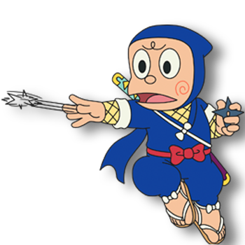

Kanzo Hattori (ハットリカンゾウ, Hattori Kanzō), also known as Ninja Hattori-kun (忍者ハットリくん, Ninja Hattori-kun) is the main protagonist of the Ninja Hattori-kun. He is a 11-year old young ninja from the Iga Clan. He is the son of Jinchu Hattori and Mrs Hattori—the elder brother of Shinzo Hattori and owner of Shishimanu. Trained in the peaceful village of Iga, Kanzo is around to help his luckless friend Kenichi from the devious Kemuzou Kemumaki.
| Kanzo_Hattori | |
|---|---|
|  | |
| Occupation: | Ninja |
| Gender: | Male |
Kanzo creates a silent, level-headed mind. Hattori possibly comes from the 16th-century ninja Hanzo Hattori.